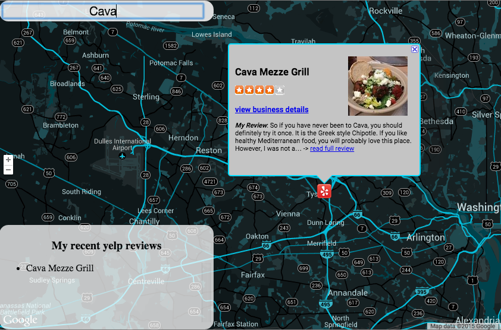
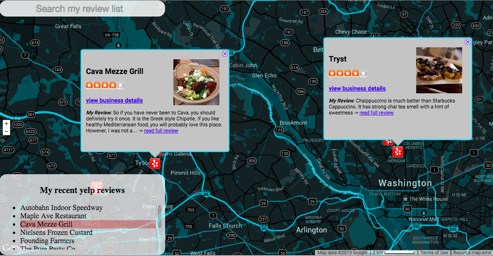
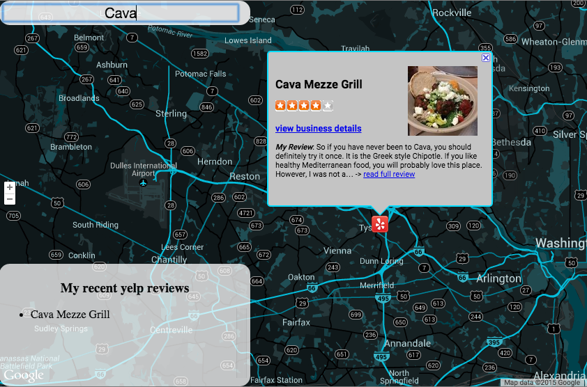
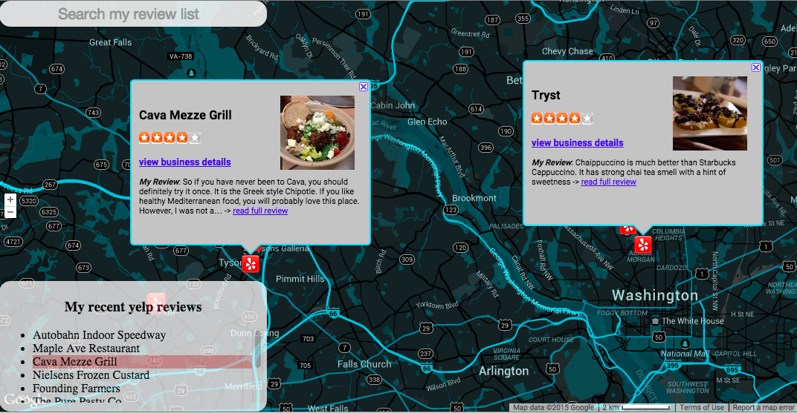

Highlights
Once the page is loaded, my recent yelp reviews will be displayed in a list and marked on the map.

Search bar can be used to filter the locations by their names
Both markers and list items are interactive.
This single page application features a map of places that I have reviewed on Yelp recently. With this app, user can easily my favorite destination in the cities and read my reviews of them.
Reviews and location data are retrieved directly from Yelp using AJAX request. I also implemented Knockout javascript library (MVVM design pattern) to assist in developing a manageable codebase.
Once the page is loaded, my recent yelp reviews will be displayed in a list and marked on the map.
Search bar can be used to filter the locations by their names
Both markers and list items are interactive.
AJAX call error handling
// Method to get my recent yelp reviews through yelp RSS call
YelpCommunication.prototype.getRRS = function(){
// Method to handle yelp API request error
var yelpRequestTimeout = setTimeout(function() {
$("#places-header").text("failed to retrieve review list");
$("#search-container").text("failed to retrieve review list");
}, 8000);
// Ajax call to get yelp review list
$.ajax({
url: document.location.protocol + "//ajax.googleapis.com/ajax/services/feed/load?v=1.0&num=10&callback=?&q=" + encodeURIComponent(this.rssUrl),
dataType: 'json',
success: function(data) {
// Clear the time out method if yelp request finsihes successfully
clearTimeout(yelpRequestTimeout);
// Handle the situation that RSS call returns nothing
if (data == null || data.responseData == null) {
$("#places-header").text("failed to retrieve review list");
} else {
data.responseData.feed.entries.forEach(function(yelpRSSentry){
// create location item based on RSS information
var yelpRSSLocation = new Location(yelpRSSentry);
locationArray.push(yelpRSSLocation);
// update observable array
ko.mapping.fromJS(locationArray, viewModel.places);
});
}
}
});
};
Knockout JS view model
// View model of Knockout.js
var ViewModel = function(){
// Assign model itself to "self" avaiable to avoid confusion
var self = this;
// Instaniate obersable for search bar
self.searchBarText = ko.observable("");
// Map location array to oberservable array and obersvables accordingly
self.places = ko.mapping.fromJS(locationArray);
// Call "match" function whenever user starts to type in the location bar
self.searchBarText.subscribe(function(newValue) {
self.match();
});
// Method to check and filter reviews
self.match = function() {
// Change the search bar text to lower case
var text = self.searchBarText().toLowerCase();
// Check whether each review matches with the text in search bar
ko.utils.arrayForEach(self.places(), function(place, index) {
// If text does not match
if (place.title().toLowerCase().search(text) < 0) {
// Hide the review from the list
place.visibility(false);
// Hide the marker and close the info bubble on the map
locationArray[index].marker.setVisible(false);
locationArray[index].infoBubble.close();
}
// If text matches
else {
// Show the review on the list
place.visibility(true);
// Show the marker on the map
locationArray[index].marker.setVisible(true);
}
});
};
};